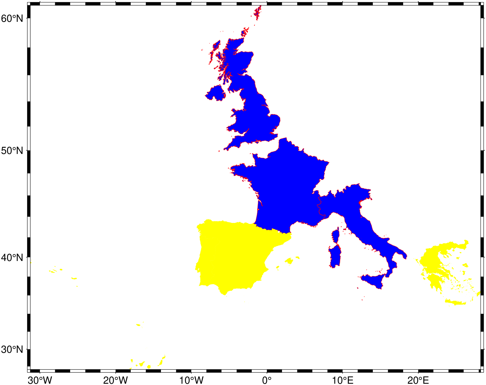

using GMT
coast(proj=:Mercator, DCW=((country="GB,IT,FR", fill=:blue, pen=(0.25,:red)),
(country="ES,PT,GR", fill=:yellow)), show=true)
Plot continents, shorelines, rivers, and borders on maps
Plots grayshaded, colored, or textured land-masses [or water-masses] on maps and optionally draws coastlines, rivers, and political boundaries. Alternatively, it can (1) issue clip paths that will contain all land or all water areas, or (2) dump the data to an ASCII table. The data files come in 5 different resolutions: (f)ull, (h)igh, (i)ntermediate, (l)ow, and (c)rude. The full resolution files amount to more than 55 Mb of data and provide great detail; for maps of larger geographical extent it is more economical to use one of the other resolutions. If the user selects to paint the land-areas and does not specify fill of water-areas then the latter will be transparent (i.e., earlier graphics drawn in those areas will not be overwritten). Likewise, if the water-areas are painted and no land fill is set then the land-areas will be transparent. A map projection must be supplied.
J or proj or projection : – proj=
Select map projection. More at [proj]
R or region or limits : – limits=(xmin, xmax, ymin, ymax) | limits=(BB=(xmin, xmax, ymin, ymax),) | limits=(LLUR=(xmin, xmax, ymin, ymax),units=“unit”) | …more
Specify the region of interest. More at [limits](../common_opts/opt_R.html). For perspective view view, optionally add zmin,zmax. This option may be used to indicate the range used for the 3-D axes. You may ask for a larger w/e/s/n region to have more room between the image and the axes.
-A or area : – area=(min_area[,min_level,max_level]), river_lake=true, lake=true, antarctica_ground=true, skip60S=true, skipN60S=true, percent=pct)
Features with an area smaller than min_area in km^2 or of hierarchical level that is lower than min_level or higher than max_level will not be plotted [Default is 0/0/4 (all features)]. Level 2 (lakes) contains regular lakes and wide river bodies which we normally include as lakes; use river_lake=true to just get river-lakes or lake=true to just get regular lakes. By default we select the ice shelf boundary as the coastline for Antarctica; use antarctica_ground=true to instead select the ice grounding line as coastline. For expert users who wish to print their own Antarctica coastline and islands via plot you can use skip60S=true to skip all GSHHG features below 60S or skipN60S=true to instead skip all features north of 60S. Finally, append percent=pct to exclude polygons whose percentage area of the corresponding full-resolution feature is less than pct.
B or axes or frame
Set map boundary frame and axes attributes. Default is to draw and annotate left, bottom and vertical axes and just draw left and top axes. More at [frame](../common_opts/opt_B.html)
C or river_fill : – river_fill=fill | river_fill=(lake=true, river_lake=true, fill=fill)
Set the shade, color, or pattern for lakes and river-lakes [Default is the fill chosen for “wet” areas (water)]. Optionally, specify separate fills by using river_fill=(lake=true, fill=fill) for lakes and river_fill=(river_lake=true, fill=fill) for river-lakes. To repeate the river_fill option use a tuple of tuples.
clip : – clip=:land | clip=:water|ocean | clip=:end
clip=:land or clip=:water|ocean starts a clipping path. clip=:end marks end of existing clip path. No projection information is needed. Also supply X and Y settings if you have moved since the clip started.
D or res or resolution : – res=:full | res=:auto
Selects the resolution of the data set to use full, high, intermediate, low, and crude. The resolution drops off by 80% between data sets. The default is res=:auto, which chooses to automatically select the best resolution given the chosen map scale.
E or DCW : – DCW=code1,code2,… | DCW=(country=code, continent=code, states=code, pen=pen, fill=fill, file=fname, inside=true, outside=false, adjust_r=??, , adjust_R=??, , adjust_e=??, headers=false)
Select painting country polygons from the Digital Chart of the World. This is another dataset independent of GSHHG and hence the area and resolution options do not apply. DCW=“+l” just list the countries and their codes [plotting takes place] and DCW=“+L” shows states/territories for Argentina (AR), Australia (AU), Brazil (BR), Canada (CA), China (CN), Great Britan (GB), India (IR), Russia (RU), and the US (US). country or name=code(s), where code(s) is a one or more comma-separated countries using the 2-character ISO 3166-1 alpha-2 convention. To select a state of a country (if available), append .state, e.g, US.TX for Texas. To get all states in a country, use states=code or DCW=+code (only available for AR, AU, BR, CA, CN, GB, IN, NO, RU, and US). To specify a whole continent, use continent=code, with continent codes AF (Africa), AN (Antarctica), AS (Asia), EU (Europe), OC (Oceania), NA (North America), or SA (South America). Use pen=pen (see [Pen attributes]) to draw polygon outlines and fill=fill (see [Fill color/pattern]) to fill them [default is no fill]. At least one of these must be specified unless dump is in effect, in which case only one DCW option can be given. It is also possible to specify the parameters using simple Tuples. For example: DCW=(“PT”, (0.5,“red”,“–”), “blue”) plots the polygon PT with a 0.5p red dashed line and filled with blue and DCW=:PT uses a default pen of 0.5. DCW=(:PT, :blue) fills with blue. You may repeat DCW to give different groups of items their own pen/fill settings. However, since we cannot repeat a keyword, the solution to setting different groupes is to use a tuple of tuples. An example would be DCW=((country=:PT, pen=(2,:red), fill=:blue), (country=:ES, pen=(2,:blue)) ). If neither proj nor dump are set then we just print the region. The file=fname is a option to let users select alternative DCW files. Available options by default are: ODS, NE10m or NE110m. For example: DCW=(country=:CH, file=:ODS) extracts the Swiss polygon from (small) ODS.nc file. The inside=true (the default) means that data is kept inside the clipping polygon. Use outside=true if want the reverse. adjust_r=?? adjusts the region boundaries to be multiples of the steps indicated by inc or xinc/yinc or winc/einc/sinc/ninc. adjust_R=?? adjusts the region boundaries adding the amounts specified by inc or xinc/yinc or winc/einc/sinc/ninc. headers=true place the country code in the segment headers via -Zcode settings (for use with the dump option).
getR or getregion or get_region : – getR=code1,code2,…
Return the region corresponding to the code/list-of-codes passed in as argument. The code(s) are the same as in the DCW option above.
F or box : – box=(clearance=gap, pen=pen, fill=fill, inner=(gap,pen), rounded=xx, shaded=(dx,dy[,shade]))
Without further options, draws a rectangular border around the map scale or rose using MAP_FRAME_PEN; specify a different pen with pen=new_pen. Add fill=fill_value to fill the logo box [no fill]. Append clearance=gap where gap is either a scalar, or tuples with (xgap, ygap), or (lgap,rgap,bgap,tgap) where these items are uniform, separate in x- and y-direction, or individual side spacings between logo and border. Append inner to draw a secondary, inner border as well. We use a uniform gap between borders of 2p and the MAP_DEFAULT_PEN unless other values are specified. Append rounded=6 to draw rounded rectangular borders instead, with a 6p corner radius. You can override this radius by appending another value. Finally, append shaded=(dx,dy[,shade]) to draw an offset background shaded region. Here, dx,dy indicates the shift relative to the foreground frame [4p,4p] and shade sets the fill style to use for shading [gray50]. Requires map_scale or rose. If both map_scale or rose, you may repeat box after each of these but remember to put repeated settings inside a tuple of tuples.
G or land : – land=fill
Select filling (see [Fill color/pattern]) “dry” areas. Append the shade, color, or pattern.
I or rivers : – rivers=type | rivers=(type, pen) | rivers=(type=type, pen=pen)
Draw rivers. Specify the type of rivers and [optionally] append pen attributes [Default pen: width = default, color = black, style = solid].
Choose type from the list of river types below; To repeat this option, use a tuple of tuples but only the NamedTuple version is allowed (the simpler rivers=(type, pen) doesn’t allow repetitions).
0 = Double-lined rivers (river-lakes)
1 = Permanent major rivers
2 = Additional major rivers
3 = Additional rivers
4 = Minor rivers
5 = Intermittent rivers - major
6 = Intermittent rivers - additional
7 = Intermittent rivers - minor
8 = Major canals
9 = Minor canals
10 = Irrigation canals
You can also choose from several preconfigured river groups:
a = All rivers and canals (0-10)
A = All rivers and canals except river-lakes (1-10)
r = All permanent rivers (0-4)
R = All permanent rivers except river-lakes (1-4)
i = All intermittent rivers (5-7)
c = All canals (8-10)L or map_scale : – map_scale=([map=true, inside=true, norm=true, paper=true,] anchor=refpoint, scale_at_lat=lat, length=len [,align=side, justify=code, fancy=true, label=lab, offset=(dx,dy), units=unit, vertical=true])
Draws a simple map scale centered on the reference point specified using one of four coordinate systems: (1) Use map=true for map (user) coordinates, (2) use inner=code for setting refpoint via a 2-char justification code that refers to the (invisible) map domain rectangle, (3) use norm=true for normalized (0-1) coordinates, or (4) use paper=true for plot coordinates (inches, cm, etc.). Scale is calculated for latitude slat (optionally supply longitude slon for oblique projections [Default is central meridian]), length=len when len is in km, or append unit from e or f or k or M ot n or u. Change the label alignment with align=:left|:right|:top|:bottom. Use fancy=true to get a “fancy” scale [Default is plain]. By default, the anchor point on the map scale is assumed to be the center of the scale (MC), but this can be changed by adding justify=code, where code is a 2-char justification code (see [ ]{.quarto-shortcode__ data-is-shortcode=“1” data-raw=“{{< gmtref text >}}”} for list and explanation of codes). label=lab selects the default label, which equals the distance unit (meter, foot, km, mile, nautical mile, US survey foot) and is justified on top of the scale. Change this by giving your own label lab. Add offset=(dx,dy) to offset the map scale by dx,dy away from the anchor in the direction implied by justify. Select units=unit to append the unit to all distance annotations along the scale (for the plain scale, this will instead select the unit to be appended to the distance length). Cartesian projections: Origin scale_at_lat is not required, fancy is not allowed, and no units should be specified in length. You must set any Cartesian data units via label. For a vertical rather than horizontal Cartesian scale, append vertical=true. Note: Use [FONT_LABEL] to change the label font and [FONT_ANNOT_PRIMARY] to change the annotation font. The height of the map scale is controlled by [MAP_SCALE_HEIGHT], and the pen thickness is set by [MAP_TICK_PEN_PRIMARY]. See box on how to place a panel behind the scale.
M or dump : – dump=true
Dumps a single multisegment ASCII (or binary, see -bo) file to standard output. No plotting occurs. Specify one of DCW, rivers, borders or shore. Note: if dump is used with DCW then region or the +r modifier to DCW are not required as we automatically determine the region given the selected geographic entities.
minpts : – minpts=??
Minimum number of points in a DCW polygon. If the number of points in a polygon is less than this value, it will be dropped. This option is only available when used together with E or DCW. Useful when the country polygons are used in zonal_stats and you want to get rid of the small polygons that only consume time.
N or borders : – borders=type | borders=(type, pen) | borders=(type=type, pen=pen)
Draw political boundaries. Specify the type of boundary and optionally append pen attributes [Default pen: width = default, color = black, style = solid].
Choose type from the list of boundaries below. To repeat this option, use a tuple of tuples but only the NamedTuple version is allowed (the simpler borders=(type, pen) doesn’t allow repetitions).
1 = National boundaries
2 = State boundaries within the Americas
3 = Marine boundaries
a = All boundaries (1-3)S or water or ocean : – water=fill
Select filling of “wet” areas. Append the shade, color, or pattern; [Default is no fill].
Td or rose : – rose=([map=true, inside=true, outside=true, norm=true, paper=true,] anchor=refpoint, width=width [,justify=code, fancy=level, labels=labels, offset=(dx,dy)])
Draws a map directional rose on the map at the location defined by the reference and anchor points: Give the reference point on the map for the rose using one of four coordinate systems: (1) Use map=true for map (user) coordinates, (2) use inside=code for setting refpoint via a 2-char justification code that refers to the (invisible) map domain rectangle, (3) use norm=true for normalized (0-1) coordinates, or (4) use paper=true for plot coordinates (inches, cm, etc.). You can offset the reference point with offset=(dx,dy) in the direction implied by justify=code. By default, the anchor point is assumed to be the center of the rose (MC), but this can be changed by using justify=code where code is a 2-char justification code (see text for list and explanation of codes). Note: If outside=true is used then justify defaults to the same as refpoint, if outside=true is used then justify defaults to the mirror opposite of refpoint. Use width=width to set the width of the rose in plot coordinates (in inches, cm, or points). Add fancy=true to get a “fancy” rose, and specify in level what you want drawn. The default [1 or true] draws the two principal E-W, N-S orientations, 2 adds the two intermediate NW-SE and NE-SW orientations, while 3 adds the eight minor orientations WNW-ESE, NNW-SSE, NNE-SSW, and ENE-WSW. Label the cardinal points W,E,S,N by adding labels and append your own four comma-separated string to override the default. Skip a specific label by leaving it blank. See Placing-dir-map-roses and box on how to place a panel behind the scale.
Tm or compass : – compass=([map=true, inside=true, outside=true, norm=true, paper=true,] anchor=refpoint, width=width, [dec=(dec, dlabel), justify=code, labels=labels, rose_primary=pen, rose_secondary=pen, offset=(dx,dy)])
Draws a map magnetic rose on the map at the location defined by the reference and anchor points: Give the reference point on the map for the rose using one of four coordinate systems: (1) Use map=true for map (user) coordinates, (2) use inner=code for setting refpoint via a 2-char justification code that refers to the (invisible) map domain rectangle, (3) use norm=true for normalized (0-1) coordinates, or (4) use paper=true for plot coordinates (inches, cm, etc.). You can offset the reference point with offset=(dx,dy) in the direction implied by justify=code. By default, the anchor point is assumed to be the center of the rose (MC), but this can be changed by using justify=code where code is a 2-char justification code (see text for list and explanation of codes). Note: If outside=true is used then justify defaults to the same as refpoint, if outside=true is used then justify defaults to the mirror opposite of refpoint. Use width=width to set the width of the rose in plot coordinates (in inches, cm, or points). Use dec=dec to assign the magnetic declination or dec=(dec, dlabel) to set dlabel, which is a label for the magnetic compass needle (use “-” as dlabel to bypass labeling). With dec, both directions to geographic and magnetic north are plotted [Default is geographic only]. If the north label is a star * as in dec=(1,“W,E,S,*”) then a north star is plotted instead of the north label. Annotation and two levels of tick intervals for both geographic and magnetic directions default to 30/5/1 degrees; override these settings by appending annot=(…,…,.), and enter six intervals to set both the geographic (first three) and magnetic (last three) intervals. Label the cardinal points W,E,S,N by adding label=lab where lab is your own four comma-separated string to override the default. Skip a specific label by leaving it blank. The rose_primary=pen and rose_secondary=pen modify the pens used to plot the outter and inner circles of the comapss. A number GMT default parameters control pens, fonts, and color. See Placing-dir-map-roses and box on how to place a panel behind the scale.
U or time_stamp : – time_stamp=true | time_stamp=(just=“code”, pos=(dx,dy), label=“label”, com=true)
Draw GMT time stamp logo on plot. More at [timestamp](../common_opts/opt_U.html)
V or verbose : – verbose=true | verbose=level
Select verbosity level. More at [verbose](../common_opts/opt_V.html)
W or shore or shorelines or coast or coastlines : – shore=pen | shore=(level=lev, pen=pen)
Draw shorelines [the Default]. Append pen attributes (see [Pen attributes]) [Defaults: width = default, color = black,style = solid] which apply to all four levels. To set the pen for each level differently, use the form shore=(level=levnum, pen=pen), where levnum is 1-4 and represent coastline, lakeshore, island-in-lake shore, and lake-in-island-in-lake shore. To repeat the shore option, use a tuple of tuples. When specific level pens are set, those not listed will not be drawn [Default draws all levels; but see area]. Note, the equivalent of the borders and rivers form shore=(level,pen) is not possible here because the parser cannot tell if shore=(2,:red) means plot level=2 in red or all levels with a line thicknes of 2 points and color red.
Z : – Z=true | Z=grid
Add a third column to the dump option (Z is ignored if dump is not set). This third column will be filled with zeros when Z=true or it interpolates the grid grid (a file name or a GMTgrid object) with grdrack at the locations of the coastline. This is particularly useful if one wants to drape a coastline on top of a grdview plot.
X or xshift or x_offset : xshift=true | xshift=x-shift | xshift=(shift=x-shift, mov=“a|c|f|r”)
Shift plot origin. More at [xshift](../common_opts/opt_X.html)
Y or yshift or y_offset : yshift=true | yshift=y-shift | yshift=(shift=y-shift, mov=“a|c|f|r”)
Shift plot origin. More at [yshift](../common_opts/opt_Y.html)
p or view or perspective : – view=(azim, elev)
Default is viewpoint from an azimuth of 200 and elevation of 30 degrees.
Specify the viewpoint in terms of azimuth and elevation. The azimuth is the horizontal rotation about the z-axis as measured in degrees from the positive y-axis. That is, from North. This option is not yet fully expanded. Current alternatives are:
bar3!) More at [perspective](../common_opts/opt_p.html)t or transparency or alpha: – alpha=50
Set PDF transparency level for an overlay, in (0-100] percent range. [Default is 0, i.e., opaque]. Works only for the PDF and PNG formats.
figname or savefig or name : – figname=name.png
Save the figure with the figname=name.ext where ext chooses the figure image format.
To plot Great Britain, Italy, and France in blue with a red outline and Spain, Portugal and Greece in yellow (no outline), and pick up the plot domain form the extents of these countries, use:
The coastline database is GSHHG (formerly GSHHS) which is compiled from three sources: World Vector Shorelines (WVS, not including Antarctica), CIA World Data Bank II (WDBII), and Atlas of the Cryosphere (AC, for Antarctica only). Apart from Antarctica, all level-1 polygons (ocean-land boundary) are derived from the more accurate WVS while all higher level polygons (level 2-4, representing land/lake, lake/island-in-lake, and island-in-lake/lake-in-island-in-lake boundaries) are taken from WDBII. The Antarctica coastlines come in two flavors: ice-front or grounding line, selectable via the area option. Much processing has taken place to convert WVS, WDBII, and AC data into usable form for GMT: assembling closed polygons from line segments, checking for duplicates, and correcting for crossings between polygons. The area of each polygon has been determined so that the user may choose not to draw features smaller than a minimum area (see area); one may also limit the highest hierarchical level of polygons to be included (4 is the maximum). The 4 lower-resolution databases were derived from the full resolution database using the Douglas-Peucker line-simplification algorithm. The classification of rivers and borders follow that of the WDBII. See The Global Self-consistent, Hierarchical, High-resolution Geography Database (GSHHG) for further details.